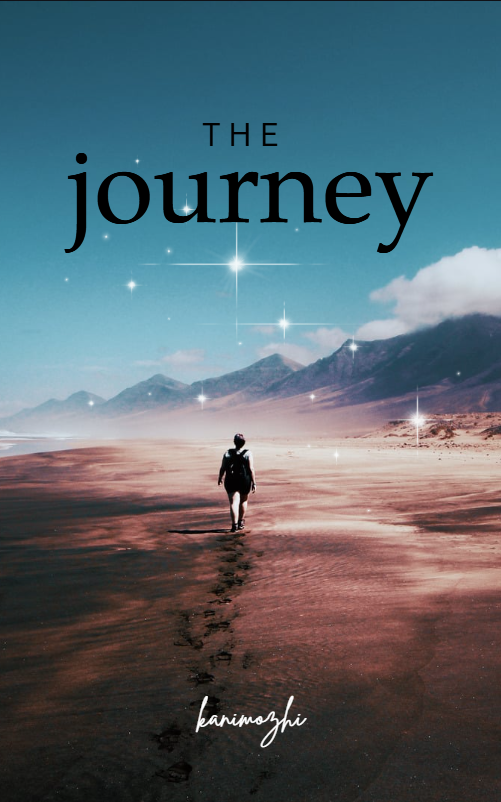
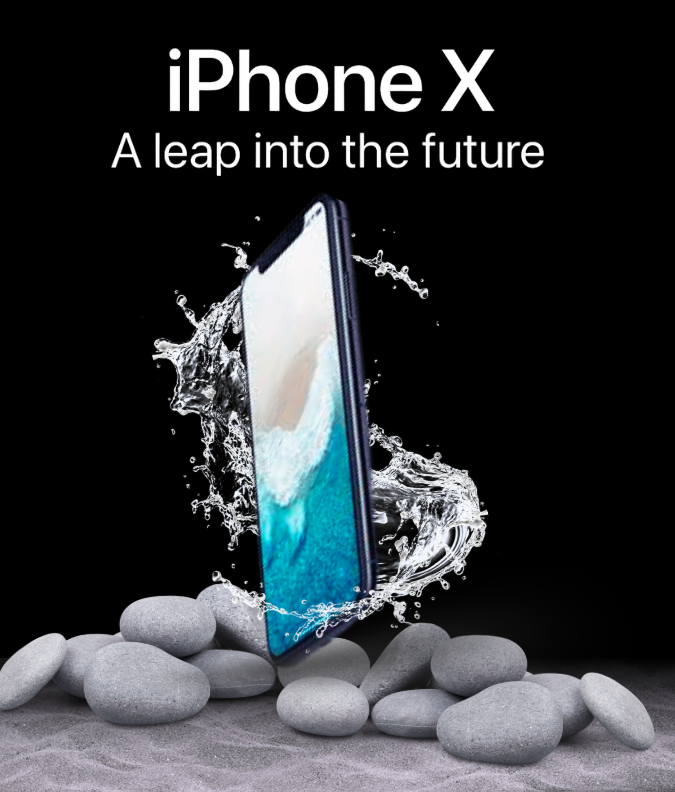
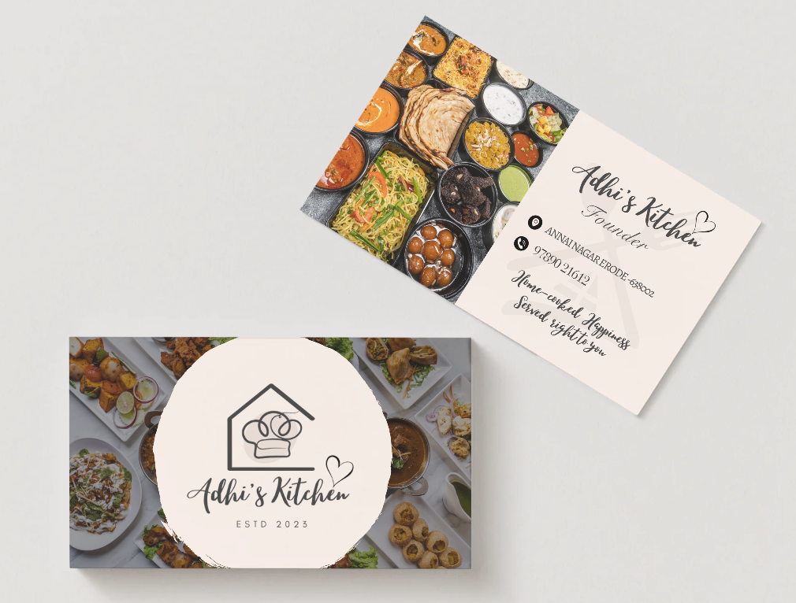

R
CREATIVE DIRECTIONRISE OF
THE TITANSICN INDIA 2026 · Concept / Story / Series Strategy
THE TITANSICN INDIA 2026 · Concept / Story / Series Strategy
Rise of the Titans
World-building, narrative architecture and a 26-reel content system.
01I analyse what a project needs, shape the concept, and turn it into content that communicates — across design, video and social media.
World-building, narrative architecture and a 26-reel content system.
01
Book cover · editorial composition
02Reels · content · creative management
03Animation · visual communication
04
Concept advertising · product visual
05
Logo · identity application
06Read the requirement, audience and purpose before choosing a format.
Find the communication problem, the opportunity and the strongest angle.
Build the idea, narrative, visual direction or content system.
Execute through design, editing, motion, writing and AI-assisted production.
Adapt the creative to the platform, audience and publishing context.
Look at the response and use what works to improve the next creative decision.
Requirement analysis, audience thinking, creative direction and concept development.
Content ideas, formats, hooks, campaign thinking and social content planning.
Social creatives, posters, campaigns, book covers and brand identity assets.
Short-form editing, talking-head, storytelling, testimony, performance and motion graphics.
Creative management, reels, content execution and performance-led iteration.
AI video and visual workflows used where they strengthen the creative outcome.
My work sits between analysis and execution. I like understanding why something needs to exist, who it needs to reach and what it needs to make people feel or do — then choosing the right creative form to deliver it.
Replace the email above with your professional email before publishing.